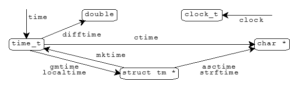

<time.h>asctime
· clock
· clock_t
· ctime
· difftime
· gmtime
· localtime
· mktime
· size_t
· strftime
· time
· time_t
· tm
asctime_s
· ctime_s
· errno_t
· gmtime_s
· localtime_s
· rsize_t
Include the standard header <time.h> to declare several
functions that help you manipulate times. The diagram
summarizes the functions and the object types that they convert
between.

The functions share two static-duration objects that hold values computed by the functions:
A call to one of these functions can alter the value that was stored earlier in a static-duration object by another of these functions.
/* MACROS */
#define CLOCKS_PER_SEC <integer constant expression > 0>
#define NULL <either 0, 0L, or (void *)0> [0 in C++]
/* TYPES */
typedef a-type clock_t;
typedef ui-type size_t;
typedef a-type time_t;
struct tm;
/* FUNCTIONS */
char *asctime(const struct tm *tptr);
clock_t clock(void);
char *ctime(const time_t *tod);
double difftime(time_t t1, time_t t0);
struct tm *gmtime(const time_t *tod);
struct tm *localtime(const time_t *tod);
time_t mktime(struct tm *tptr);
size_t strftime(char *restrict s, size_t n,
const char *restrict format, const struct tm *restrict tptr);
time_t time(time_t *tod);
#if __STDC_WANT_LIB_EXT1__ [added with TR24731]
typedef int errno_t;
typedef size_t rsize_t;
errno_t asctime_s(char *s, rsize_t maxsize,
const struct tm *tptr);
errno_t ctime_s(char *s, rsize_t maxsize,
const time_t *tod);
struct tm *gmtime_s(const time_t *restrict tod,
struct tm *restrict tptr);
struct tm *localtime_s(const time_t *restrict tod,
struct tm *restrict tptr);
#endif /* __STDC_WANT_LIB_EXT1__ */
asctimechar *asctime(const struct tm *tptr);
The function stores in the static-duration time string a 26-character
English-language representation of the time encoded in *tptr.
It returns the address of the static-duration
time string. The text
representation takes the form:
Sun Dec 2 06:55:15 1979\n\0
The function is not necessarily thread safe.
asctime_serrno_t asctime_s(char *s, rsize_t maxsize,
const struct tm *tptr); [added with TR24731]
A runtime constraint violation occurs if:
s is a null pointermaxsize is less than 26 or greater than
RSIZE_MAXtptr is a null pointer*tptr lie outside
their normal ranges (as if generated by a call to
mktime*tptr is less than
zero or greater than 9999If such a violation occurs, other than the first two,
the function stores a null character in s[0].
It returns the error code it reported to the constraint handler.
Otherwise, the function stores in
the array of char beginning at s a 26-character
English-language representation of the time encoded in *tptr.
It returns zero. The text representation takes the form:
Sun Dec 2 06:55:15 1979\n\0
clockclock_t clock(void);
The function returns the number of clock ticks of elapsed processor time, counting from a time related to program startup, or it returns -1 if the target environment cannot measure elapsed processor time.
CLOCKS_PER_SEC#define CLOCKS_PER_SEC <integer constant expression > 0>
The macro yields the number of clock ticks,
returned by clock, in one second.
clock_ttypedef a-type clock_t;
The type is the arithmetic type a-type
of an object that you declare to hold the value returned by
clock, representing
elapsed processor time.
ctimechar *ctime(const time_t *tod);
The function converts the calendar time in *tod to a
text representation of the
local time,
as measured in the current local
timezone, in the static-duration
time string.
It returns the address of that string.
The Time Zone setting and the Daylight Saving setting of the Date & Time settings in the system settings are reflected in the local time.
It is equivalent to:
return (asctime(localtime(tod)));
The function is not necessarily thread safe.
ctime_serrno_t ctime_s(char *s, rsize_t maxsize,
const time *tod); [added with TR24731]
A runtime constraint violation occurs if:
s is a null pointermaxsize is less than 26 or greater than
RSIZE_MAXtod is a null pointer*tod is less than
zero or greater than 9999If such a violation occurs, other than the first two,
the function stores a null character in s[0].
It returns the error code it reported to the constraint handler.
Otherwise, the function stores in
the array of char beginning at s a 26-character
English-language representation of the time encoded in *tod.
It is equivalent to:
return (asctime_s(localtime_s(tod)));
difftimedouble difftime(time_t t1, time_t t0);
The function returns the difference t1 - t0, in seconds,
between the calendar time t0
and the calendar time t1.
errno_ttypedef int errno_t; [added with TR24731]
The type is a synonym for int, used to represent
a value that can be stored in
errno.
gmtimestruct tm *gmtime(const time_t *tod);
The function stores in the static-duration
time structure an
encoding of the calendar time in *tod, expressed as
Coordinated Universal Time, or UTC [sic].
(UTC was formerly Greenwich Mean Time, or GMT).
It returns the address of that structure, or
[added with C99] a null pointer if
it cannot generate the encoding.
The function is not necessarily thread safe.
gmtime_sstruct tm *gmtime_s(const time_t *restrict tod,
struct tm *restrict tptr); [added with TR24731]
A runtime constraint violation occurs if:
tod is a null pointertptr is a null pointerIf such a violation occurs, the function returns a null pointer.
Otherwise, the function stores in *tptr an
encoding of the calendar time in *tod, expressed as
Coordinated Universal Time.
It returns tptr, or a null pointer if
it cannot generate the encoding.
localtimestruct tm *localtime(const time_t *tod);
The function stores in the static-duration
time structure an
encoding of the calendar time in *tod, expressed as
local time.
It returns the address of that structure, or
[added with C99] a null pointer if
it cannot generate the encoding.
The function is not necessarily thread safe.
localtime_sstruct tm *localtime_s(const time_t *restrict tod,
struct tm *restrict tptr); [added with TR24731]
A runtime constraint violation occurs if:
tod is a null pointertptr is a null pointerIf such a violation occurs, the function returns a null pointer.
Otherwise, the function stores in *tptr an
encoding of the calendar time in *tod, expressed as
local time.
It returns tptr, or a null pointer if
it cannot generate the encoding.
mktimetime_t mktime(struct tm *tptr);
The function alters the values stored in *tptr
to represent an equivalent encoded
local time, but with the values of all members
within their normal ranges.
It then determines the values tptr->wday
and tptr->yday from the values of the other members.
It returns the calendar time equivalent to the encoded time, or it returns a
value of -1 if the calendar time cannot be represented.
NULL#define NULL <either 0, 0L, or (void *)0> [0 in C++]
The macro yields a null pointer constant that is usable as an address constant expression.
rsize_ttypedef size_t rsize_t; [added with TR24731]
The type is a synonym for size_t,
used to represent a function argument to be checked on entry
to a function. It is a
runtime constraint violation
for an argument of type rsize_t to be greater than
RSIZE_MAX.
size_ttypedef ui-type size_t;
The type is the unsigned integer type ui-type
of an object that you declare to store the result of the
sizeof operator.
strftimesize_t strftime(char *restrict s, size_t n,
const char *restrict format, const struct tm *restrict tptr);
The function generates formatted text, under the control of
the format format and the values stored in the time structure
*tptr. It stores each generated character
in successive locations of the array object of size
n whose first element has the address s.
The function then stores a null character in the next location
of the array. It returns x, the number of characters generated,
if x < n; otherwise, it returns zero, and the
values stored in the array are indeterminate.
For each multibyte character other than % in the format,
the function stores that multibyte character in the array object.
Each occurrence of % followed by an optional qualifier and
another character in the format is a
conversion specifier.
The optional qualifiers
[added with C99] are:
E, to represent times in terms of a locale-specific
era
(such as 1 BC instead of 0000).O, to represent numeric values with a set of locale-specific
alternate digits
(such as first instead of 1).For each conversion specifier, the function stores a replacement character sequence.
The following table lists all conversion specifiers
defined for strftime.
The fields used in *tptr follow.
Example replacement character sequences
in parentheses follow each description. All examples are for the
"C" locale,
which ignores any optional qualifier,
using the date and time Sunday, 2 December 1979 at 06:55:15 AM GMT.
For a Sunday week of the year, week 1 begins with the first Sunday on or after 1 January. For a Monday week of the year, week 1 begins with the first Monday on or after 1 January. An ISO 8601 week of the year is the same as a Monday week of the year, with the following exceptions:
Conversion specifications marked with a
+ in the table below are all
added with C99:
SPECIFIER FIELDS DESCRIPTION (EXAMPLE)
%a tm_wday abbreviated weekday name (Sun)
%A tm_wday full weekday name (Sunday)
%b tm_mon abbreviated month name (Dec)
%B tm_mon full month name (December)
%c [all] date and time (Sun Dec 2 06:55:15 1979)
%Ec [all] + era-specific date and time
%C tm_year + year/100 (19)
%EC tm_mday + era specific era name
tm_mon
tm_year
%d tm_mday day of the month (02)
%D tm_mday + month/day/year from 01/01/00 (12/02/79)
tm_mon
tm_year
%e tm_mday + day of the month, leading space for zero ( 2)
%F tm_mday + year-month-day (1979-12-02)
tm_mon
tm_year
%g tm_wday + year for ISO 8601 week, from 00 (79)
tm_yday
tm_year
%G tm_wday + year for ISO 8601 week, from 0000 (1979)
tm_yday
tm_year
%h tm_mon + same as %b (Dec)
%H tm_hour hour of the 24-hour day, from 00 (06)
%I tm_hour hour of the 12-hour day, from 01 (06)
%j tm_yday day of the year, from 001 (336)
%m tm_mon month of the year, from 01 (12)
%M tm_min minutes after the hour (55)
%n + newline character \n
%p tm_hour AM/PM indicator (AM)
%r tm_sec + 12-hour time, from 01:00:00 AM (06:55:15 AM)
tm_min
tm_hour
%Er tm_sec + [non-standard] era-specific date and 12-hour time
tm_min
tm_hour
tm_mday
tm_mon
tm_year
%R tm_min + hour:minute, from 01:00 (06:55)
tm_hour
%S tm_sec seconds after the minute (15)
%t + horizontal tab character \t
%T tm_sec + 24-hour time, from 00:00:00 (06:55:15)
tm_min
tm_hour
%u tm_wday + ISO 8601 day of the week, to 7 for Sunday (7)
%U tm_wday Sunday week of the year, from 00 (48)
tm_yday
%V tm_wday + ISO 8601 week of the year, from 01 (48)
tm_yday
tm_year
%w tm_wday day of the week, from 0 for Sunday (0)
%W tm_wday Monday week of the year, from 00 (48)
tm_yday
%x [all] date (02/12/79)
%Ex [all] + era-specific date
%X [all] time, from 00:00:00 (06:55:15)
%EX [all] + era-specific time
%y tm_year year of the century, from 00 (79)
%Ey tm_mday + year of the era
tm_mon
tm_year
%Y tm_year year (1979)
%EY tm_mday + era-specific era name and year of the era
tm_mon
tm_year
%z tm_isdst + time zone (hours east*100 + minutes), if any ()
%Z tm_isdst time zone name, if any. null string in this implementation ()
%% percent character %
timetime_t time(time_t *tod);
If tod is not a null pointer, the function stores the
current calendar time in *tod. The function returns the current
calendar time, if the target environment can determine it; otherwise,
it returns -1.
time_ttypedef a-type time_t;
The type is the arithmetic type a-type
of an object that you declare to hold
the value returned by time.
The value represents calendar time.
tmstruct tm {
int tm_sec; seconds after the minute (from 0)
int tm_min; minutes after the hour (from 0)
int tm_hour; hour of the day (from 0)
int tm_mday; day of the month (from 1)
int tm_mon; month of the year (from 0)
int tm_year; years since 1900 (from 0)
int tm_wday; days since Sunday (from 0)
int tm_yday; day of the year (from 0)
int tm_isdst; Daylight Saving Time flag
};
struct tm contains members that describe various
properties of the calendar time. The members shown above can occur
in any order, interspersed with additional members. The comment following
each member briefly describes its meaning.
The member tm_isdst contains:
See also the Table of Contents and the Index.
© 2012 Sony Computer Entertainment Inc. All rights reserved.
Copyright © 1992-2013 by P.J. Plauger and Jim Brodie. All rights reserved.